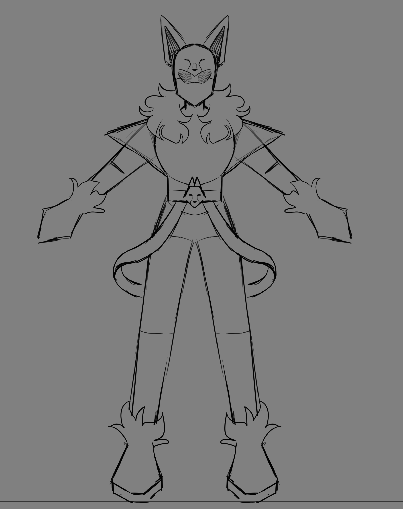
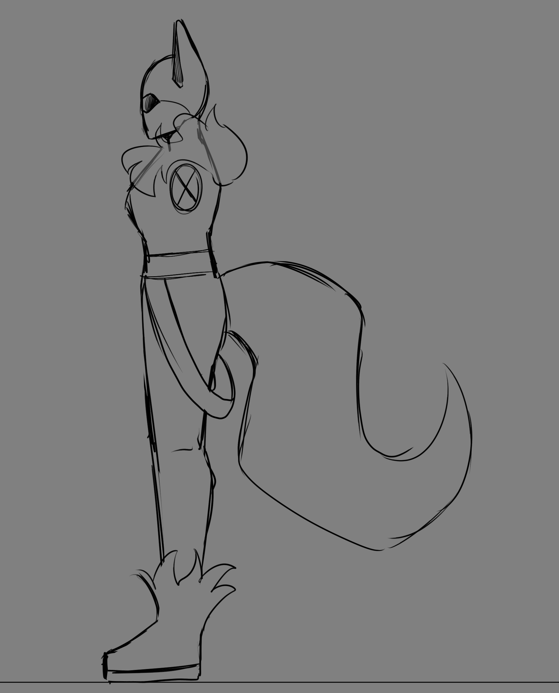
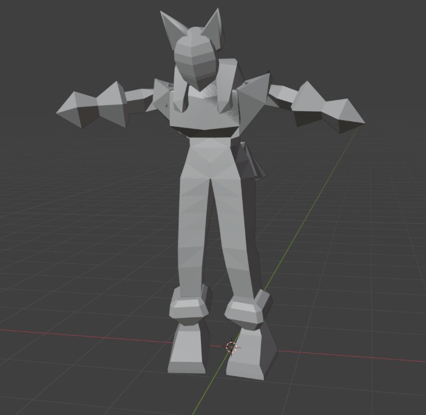
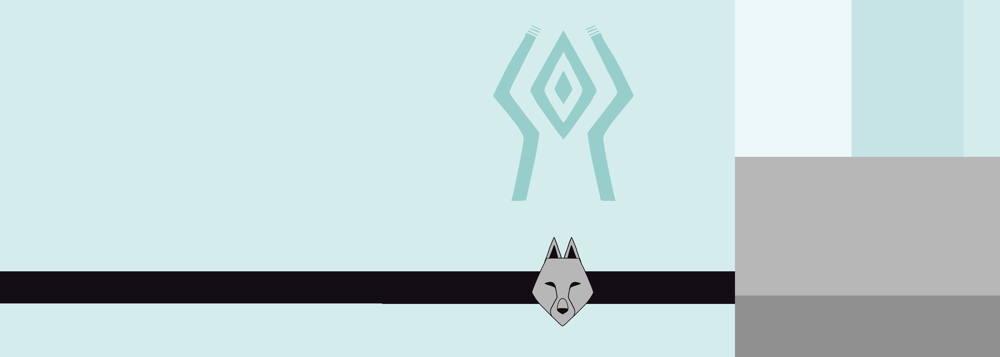
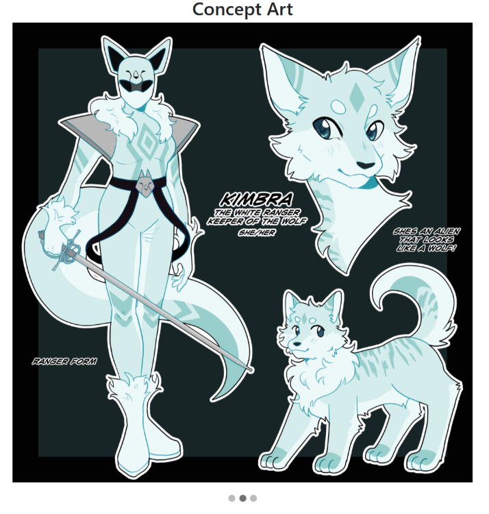

In creating my 3D models, I usually started out with a piece of concept art. For example, with my power ranger model I used the concept art I drew:

From this, I drew a loose sketch of the model. This was to break down the model into sizable chunks I could then import into blender. This involved usually a front view and side view
 Importing these into blender, I could then model a low poly version of the character. Which I then rigged and animated. I did all the rigging myself for all three models!
After finishing the model, I drew the textures up on Clip Studio Paint. For the man and the snow leopard, I kept the textures as one image but for the power ranger I split her texture into segments.
After applying the texture, the model was complete!

I used a bootstrap canvas to hold all the models. There I was also able to use three.js to add a hemisphere light and a light spot. Initially, this didn’t work due to my models using emission for their materials. However, changing this allowed for the light to reflect on the models. There are buttons on the top of the page to switch models and the buttons on the bottom play the animations alongside toggling wireframe and rotating the model.
I have added an additional navbar with images on the home page and on the concept art page I added a slideshow function to pan through the artwork for the models.
There are orbit controls so you can pan around and zoom in to each model. In addition, you can switch the models out with buttons.
Throughout the process of this project, I have done many types of tests. I did functional testing to check if every button works as it should. While some buttons work slightly differently than intended, I made sure to add alternate buttons where I could.
In usability testing I made sure to add a navbar at the top of each page meant that the user can easily navigate the pages. I also tried to keep accessibility in mind with accessibility by making each page easy to look at with no glaringly bad colours.
Asking fellow students their opinions, they navigated through my website and commented that the set up and appearance could look nicer which I agree with however they did like my models and animations.
This project has helped massively for me to understand modelling and animation. As web development is something I have not had experience with before I found it incredibly difficult, with things not working often and me being unable to decipher why. Therefore I focused more on creating models I was very proud of. I went the extra mile in creating the rigs for each model and doing animations that were complicated such as a walk cycle. I love how they all turned out overall and have discovered a passion for modelling. I tried my best to push myself on the website development, ensuring buttons work as intended with the javascript and the website includes everything necessary.
I have added an about page (you’re here right now!) and made sure that the website will be openable from a zip file when submitted.